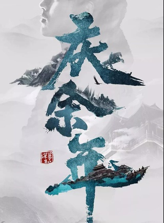
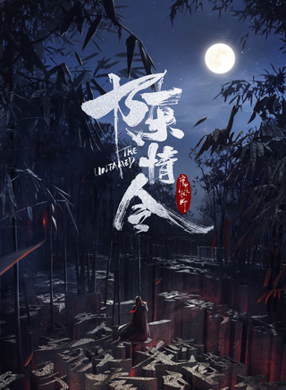
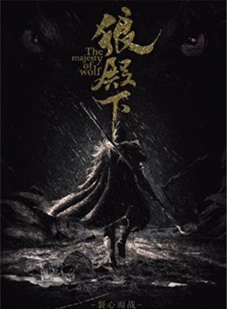

演艺经历
2016年2月6日，《燃烧吧少年》最后一期总决赛播出，肖战与队友最终以总分476分惜败于李宇春战队。3月，肖战入围第十六届音乐风云榜年度盛典最受欢迎新偶像
候选名单。9月24日，随X玖少年团推出同名数字专辑《X玖》。9月28日，在X玖少年团出道发布会上，肖战以主唱担当的身份正式出道。9月29日，主演的校园星座超能力网络剧《超星星学园》在腾讯上线，在剧中饰演男主角方天择，拥有着双子座分身的超能力；此外，该剧是肖战个人首部影视作品，并凭方天择一角获得“腾讯视频星光大赏年度新锐电视剧男演员奖”提名。11月16日，穿越言情剧《相爱穿梭千年2：月光下的交换》在湖南卫视播出，在剧中肖战友情客串，饰演经营代代相传的摄影店的梁老板。12月31日，在江苏卫视“17聚幸福”跨年演唱会上表演组合歌曲《B.O.Y.S》。
2018年1月，随组合发布第二张专辑《Keep Online》。同时，还参演了由袁锦麟自编自导的悬疑动作片《素人特工》 。1月25日，确认出演根据猫腻同名小说改编、孙皓执导的古装权谋电视剧《庆余年》，在剧中饰演庆国派往北齐舍生潜伏的间谍言冰云。2月16日，参演的东方魔幻冒险喜剧片《捉妖记2》在中国内地上映，在片中饰演了永宁村少妖团成员之一，并随组合演唱片中表演歌曲《逍遥最好》。4月25日，参演的古装穿越言情网络剧《哦！我的皇帝陛下》在腾讯视频上线，肖战凭借清眸拓墨、出尘绝世的王爷北堂墨染崭露头角，并为该剧演唱个人首支影视插曲《踩影子》；该剧开播后，肖战首次登上Vlinkage艺人新媒体指数榜；直至6月14日完结时，肖战最高以指数8.33的成绩排名第6 。同时，在由郑伟文和陈嘉霖执导的古装仙侠剧《陈情令》中饰演夷陵老祖魏无羡。6月9日，以学长身份参与录制的女团竞演综艺节目《创造101》在腾讯视频播出，肖战首次在舞台挑战rap，与孟美岐组同台演绎《我就是这种女孩》。10月4日，随组合举行“Keep Online”巡回演唱会杭州首站。10月5日，推出个人生日单曲《满足》。10月9日，在由中国青年报、中青在线联合酷我音乐联合出品的青年阅读分享类音频节目《榜样阅读》中朗读周国平先生的文章《自己的园地》。之后，在根据萧鼎同名小说改编并由程小东执导的青春仙侠电影《诛仙》中饰演平凡少年张小凡，经草庙村惨案拜入青云门，机缘巧合之下获得法器烧火棍，从而卷入正邪两道之间隐秘斗争；而该片定档于2019年8月8日在全国上映。11月28日，在COSMO时尚美丽盛典上，获得了年度青春美丽偶像奖。12月18日，肖战获得腾讯视频星光盛典“DOKI年度人气王”奖。
早年经历
肖战从8岁时开始学画画，也曾学过小提琴。在重庆工商大学就读期间，肖战在校合唱团内担任男生声部部长，随合唱团参加过校内外文艺汇演，也曾得过重庆十佳歌手大奖、校园十佳歌手大奖等，是个文艺积极分子。大二时，肖战和朋友成立设计工作室，接一些LOGO和VI设计的小活。同时，还跟朋友成立一个摄影工作室，在工作室内担任主力摄影师。大学毕业后，肖战在一个传媒老师开的设计工作室里工作，是一名设计师。
主要作品
参演电视剧
- 
- 
- 
参演电影

 京公网安备 11010802021885号
京公网安备 11010802021885号